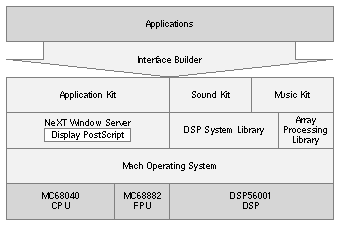
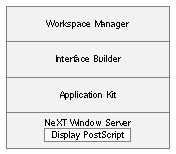
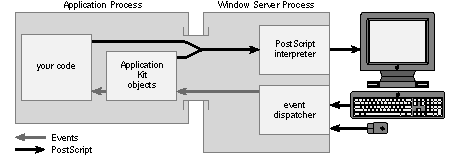
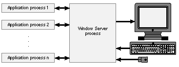
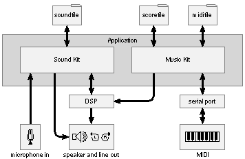

Release 3.3 Copyright ©1995 by NeXT Computer, Inc. All Rights Reserved.
| 1 | System Overview |
| As illustrated in Figure 1-1, there are four levels of software between a NeXTTMapplication program and the hardware that executes it: |
| The NeXT Interface BuilderTM | ||
| Object-oriented software "kits" | ||
| The NeXT Window Server and specialized C libraries | ||
| The Mach operating system |
|  |
| Figure 1-1. System Overview
Interface Builder is a powerful tool that lets you graphically design your application's user interface. It also makes it easy for you to establish connections between user-interface objects and your own code (for example, the code to execute when a button on the screen is clicked). NeXT application programs are written in Objective-C, an extension to C that adds object-oriented concepts to the language. The software kits define a number of classes, or object templates, that you can use in your own applications. The software kits currently provided by NeXT are: |
| An Application Kit that every application uses to implement the NeXT window-based user interface | ||
| Sound KitTMfor adding sounds to your application, doing speech analysis, and performing other sound manipulation | ||
| Music KitTMfor music composition, synthesis, and performance |
| The NeXT Window Server is a low-level background process used by the Application Kit to manage windows and to send user events, such as mouse and keyboard actions, back to an application. Included in the Window Server is a Display PostScript®interpreter that's used for all drawing of text and graphics on the screen or printed page. The Display Postscript system was jointly developed by NeXT and Adobe Systems Inc. as an enhancement of Adobe's PostScript®page description language.
Sound Kit and Music Kit use the DSP56001 digital signal processor (the DSP) as a sound synthesizer. Objects in these kits communicate with the DSP by calling functions in the DSP system library. In addition to establishing and managing a channel of communication between your application and the DSP, the functions in the DSP system library also provide diagnostic capabilities and data conversion routines. The functions in the array processing library use the DSP as an array processor, allowing your application to process multidimensional data with great speed and efficiency. Any application can include and use the array processing library. Mach is a multitasking operating system developed at Carnegie Mellon University. It acts as an interface between the upper levels of software and the three Motorola microprocessors provided with the NeXT computer: the MC68040 central processor, the MC68882 floating-point coprocessor, and the DSP56001 digital signal processor. The rest of this chapter elaborates on this simplified overview. In the next section, Interface Builder, the Application Kit, and the Window Server are described as part of the NeXTstep working environment. Subsequent sections describe Mach and the sound and music facilities, which aren't included in NeXTstep. From this base of knowledge about the NeXT system, you can go on to read the chapters that address your areas of interest. |
| NeXTstep |
| NeXTstep combines the essential components of the software design into a working environment for both the user and the application developer. Figure 1-2 shows the software elements of NeXTstep. |
|  |
| Figure 1-2. NeXTstep
Workspace ManagerTMis an application that runs automatically after you log in. From Workspace Manager you can launch applications, manage files, and perform other tasks, as described in detail in the NeXT User's Reference manual.
Interface Builder Interface Builder is a powerful application that has a twofold purpose: |
| It lets you graphically design a user interface for your application. | ||
| It creates a programming environment for each new project. |
| Interface Builder displays a window that represents your application's user interface and provides graphic access to a number of standard interface objects, such as text fields, buttons, and menus. To design an interface, you simply drag the interface objects into your application's interface window and place them where you want them. You can inspect and modify an object to create a particular look--you can even give it a sound effect.
Interface objects understand user events such as mouse and keyboard actions and automatically perform basic display operations when an action is directed at them. For example, a button knows how to graphically highlight itself when the user clicks it, a text field displays the characters that the user types in it, a window disappears when its close button is clicked, and so on. In addition, Interface Builder has tools for connecting interface objects to each other. For instance, you can connect a button to a panel such that the panel comes to the front when the user clicks the button, or you can connect a slider to a text field so that the value displayed in the text field is continuously updated as the user drags the slider's knob up and down. NeXT provides the code for the basic interface operations; you can also design your own objects and actions and connect them in Interface Builder. For some simple applications, the interface objects and the code provided by NeXT are sufficient, allowing you to create an application without writing a line of code. Most applications, of course, require more work than simply defining an interface. The other facet of Interface Builder, its creation of a programming environment, makes it a good place to start a new project even if the interface is trivial compared to the amount of programming the project requires. Interface Builder can automatically create a UNIX®makefile (the script for your application's compilation routine), some basic source code, and the header files that your application needs to compile.
The Application Kit All applications use the Application Kit regardless of their purpose and complexity. The buttons, sliders, and windows that you use to design an interface with Interface Builder are defined as classes in the Application Kit. Also, as described in the next section, it's through this Kit that your application is able to draw on the screen and receive events from the user. The Objective-C language and the software kits make it easy to create your own class of object. One of the features of the language is that it supports class inheritance; this means that you can create a class that inherits the attributes of another class. For example, you can create a class that inherits from the Application Kit's Button class (by convention, class names are capitalized in Objective-C). Your version of Button will be able to do everything that the Kit version can do, plus you can add to it the specialized functionality that your application requires.
The NeXT Window Server The NeXT Window Server is a low-level background process that creates and manipulates windows on the screen. Your application establishes a connection with the Window Server through the Application Kit and opens one or more windows. Windows provide a vehicle for communication between the user and the application. The Window Server manages this communication as it fulfills two functions: |
| It draws images on the screen according to instructions sent from your application. | ||
| It sends user events back to your application. |
| Drawing with Display PostScript
The Window Server draws images with NeXT's implementation of the Display PostScript system. Display Postscript provides an interactive, display-oriented environment that's independent of any window system. NeXT's implementation extends the language with features unique to the NeXT window system. All the Display PostScript operators and the NeXT extensions to the language can be accessed as C functions. In addition, NeXT supplies a program named pswrap that lets you generate C functions that correspond to your own PostScript procedures.
Handling Events Besides drawing images on the screen, the Window Server also identifies user events and dispatches them to your application. Through a mechanism defined in the Application Kit, the event is forwarded to the appropriate object: |
| The event may be handled entirely by an Application Kit object. For example, if the user chooses a command that edits the text of a Text object, the operation is handled entirely by code that's built into the definition of the Text class in the Application Kit. | ||
| The Application Kit object may do some of the event handling, leaving the rest to your code. If, for example, the user clicks a button on the screen, the Application Kit's definition of the Button class takes care of highlighting and unhighlighting the button, while your code performs application-specific actions associated with the object. |
| Figure 1-3 shows the overall data flow for a typical application that accepts input from the keyboard and mouse and displays output on the screen. |
|  |
| Figure 1-3. Window System Data Flow
In this program model, the application consumes user events and draws on the screen. This largely replaces the UNIX model in which an application reads from the standard input stream and writes to the standard output stream. The Application Kit and the Window Server work together to reduce the work you must do to build applications that interact with the user. |
| The Mach Operating System |
| The Mach operating system provides complete compatibility with UNIX 4.3BSD (Berkeley Software Distribution) but adds a faster and more consistent system of interprocess communication, a larger virtual memory space, memory-mapped files, and multiple threads of execution within a single address space. Mach gives programmers the entire standard UNIX environment; existing machine-independent UNIX 4.3BSD applications need only be recompiled to run on the NeXT computer.
Every running application is a separate process. In Mach, several processes may be running concurrently. For example, the Window Server process runs at the same time as all currently executing application processes (see Figure 1-4). |
|  |
| Figure 1-4. Window Server and Application Processes
In addition to providing a multitasking environment, Mach lets processes communicate with each other. This feature is used by applications such as Digital WebsterTM, which can look up a word selected from text that's displayed by an entirely different application. |
| Sound and Music Overview |
| The NeXT computer provides a powerful system for creating and manipulating sound and music. The software for this system is divided into two kits: Sound Kit and Music Kit. The kit that you need depends on the demands of your application: |
| Sound Kit lets you incorporate prerecorded sound effects into your application and provides easy access to the microphone input so you can record your own sounds. The objects in Sound Kit let you examine and manipulate sound data with microscopic precision. | ||
| Music Kit provides tools for composing, storing, and performing music. It lets you communicate with external synthesizers as well as create your own software instruments. Like Sound Kit, Music Kit provides objects that create and manipulate sounds with exquisite detail, but, more importantly, Music Kit helps you organize and arrange groups of sounds and design a performance. |
| Sound Kit
A small number of system beep-type sound recordings, stored in files on the disk (called soundfiles), are provided by NeXT. Through Sound Kit, you can easily access these files and incorporate the sounds into your application. It's also extremely easy to record new sounds into the NeXT computer. Simply plug a microphone into the input jack at the back of the monitor and, with a single message to the Sound Kit's Sound object, you can record your own sound effect. Sound playback is just as simple: another message and the sound is played on the internal speaker and sent to the stereo output jacks at the back of the monitor. When you record a sound using the Sound object, a series of audio "snapshots" or samples is created. By storing sound as samples, you can analyze and manipulate your sound data with an almost unlimited degree of precision. The SoundView class lets you see your sounds by displaying the samples in a window. While Sound Kit is designed primarily for use on sampled data, you can also use it to send instructions to the DSP. The speed of the DSP makes it an ideal sound synthesizer and, in general, DSP instructions take up much less space than sampled data. The Sound object manages the details of playing sounds for you, so you needn't be aware of whether a particular Sound contains samples or DSP instructions.
Music Kit Music Kit provides a number of ways to compose and perform music. By attaching an external synthesizer keyboard to a serial port, you can play the NeXT computer as a musical instrument. Alternatively, you can compose music to be played by the computer by creating music data in a text editor or by creating an algorithm that generates it automatically. These approaches can be combined in performance. For instance, a musician can use an external keyboard to trigger precomposed events, allowing the computer to create sounds and gestures that are impossible on a traditional instrument, but at moments specified by the performer.
Creating and Storing Music Data Music Kit represents music as a series of Note objects. Each Note object describes the characteristics of a musical note, such as its pitch, loudness, and duration. How a Note object is performed depends on the detail it contains. Notes can be stored in a file as statements written in ScoreFile, a music language developed at NeXT that represents music as text. A file written in the ScoreFile language is called a scorefile. In addition to reading and writing scorefiles from an application, you can also create and modify them with a text editor. Music Kit recognizes the MIDI (Musical Instrument Digital Interface) standard. You can attach a MIDI instrument to a serial port at the back of the computer and capture a performance. MIDI commands are turned into Note objects that can be manipulated and stored.
Creating and Performing Musical Sounds As mentioned earlier, one of the benefits of the DSP56001 is that it can be used to synthesize sounds. The generality of the DSP allows a wide range of synthesis techniques; in fact, the DSP can emulate almost any commercially available keyboard synthesizer. A number of ready-to-use DSP software instruments are provided as Objective-C classes in the Music Kit. Software instruments are constructed from synthesis building blocks also written in Objective-C, so you can easily modify the existing instruments or design your own. Just as you can enter music data through MIDI, you can perform music on an external synthesizer by sending MIDI data back out a serial port. Music Kit and music-related device drivers are designed to handle synchronization for you, allowing you to synthesize music on the DSP and send MIDI data to an external synthesizer at the same time. By using objects from both Music Kit and Sound Kit, you can create an instrument that plays sampled data. For instance, you can use a Sound object to record a single tone from a traditional instrument and then play the tone back at the pitches and times specified by a series of Note objects. You can also use Sound Kit to record, in soundfiles, entire musical performances synthesized on the DSP. Figure 1-5 shows the components for creating, playing, and storing music and sound with the hardware and software of the NeXT computer. |
|  |
| Figure 1-5. Music and Sound Components |